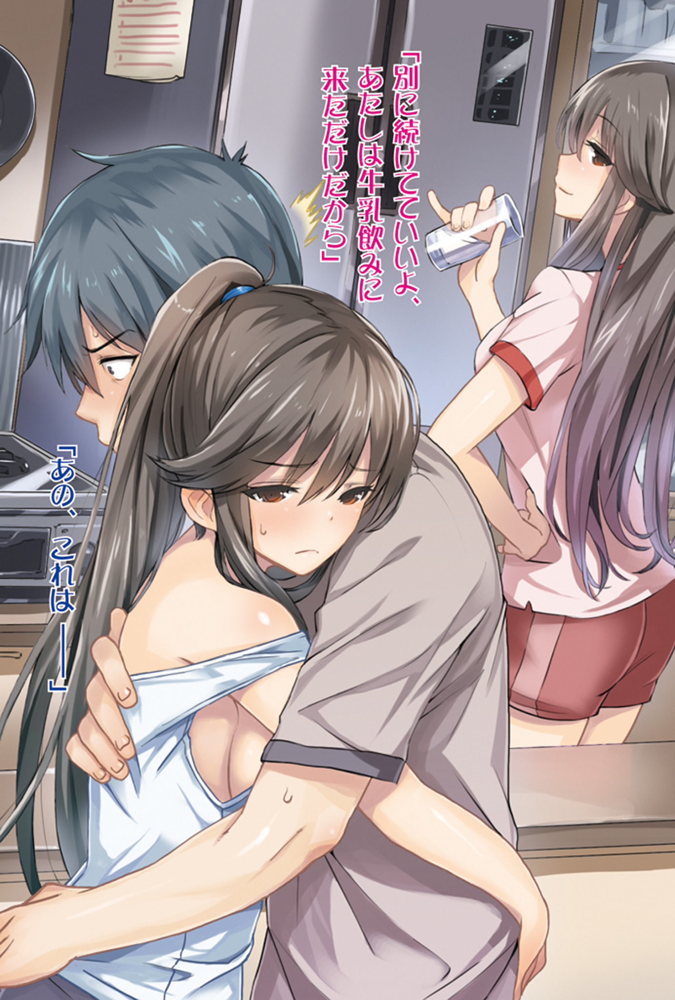
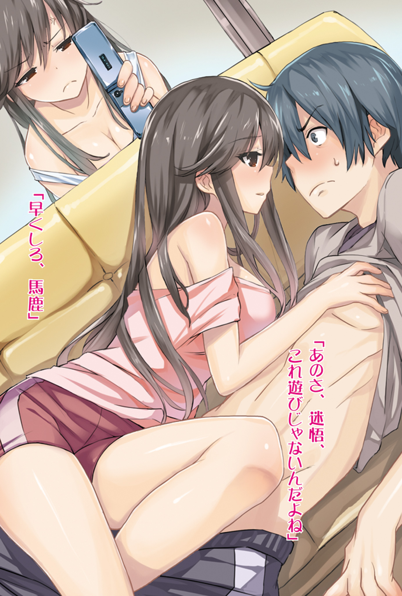
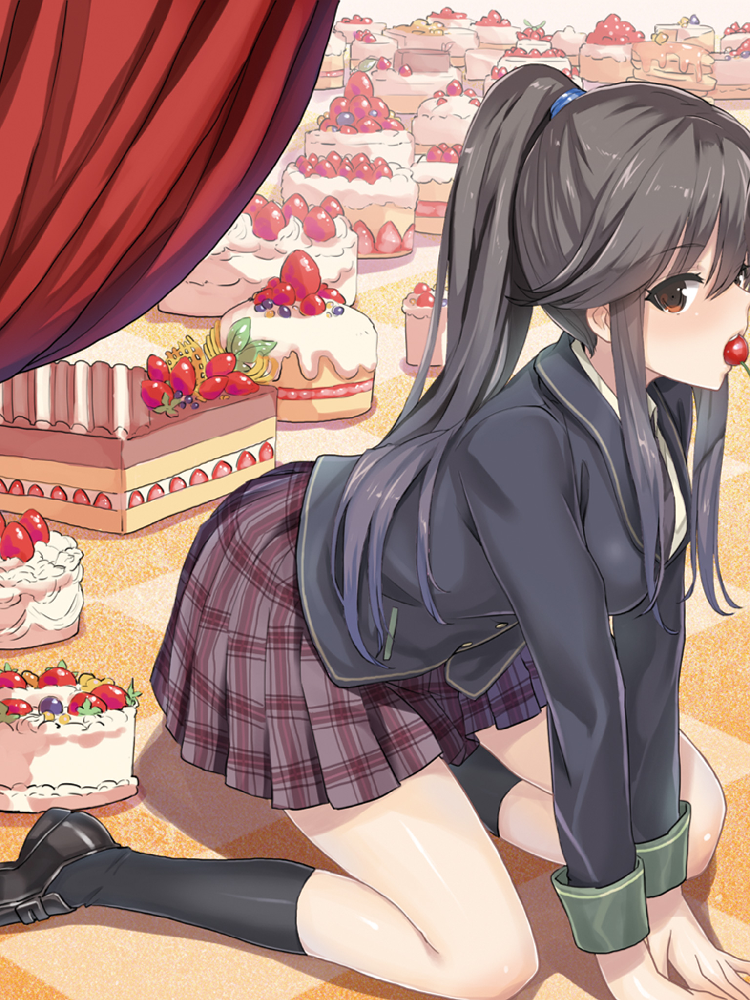
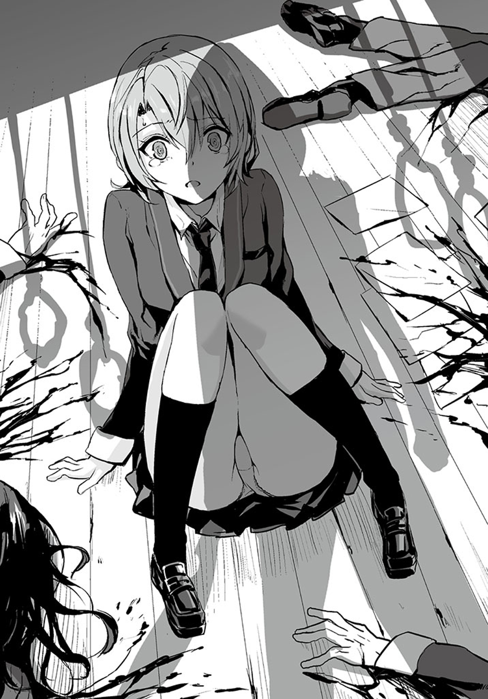
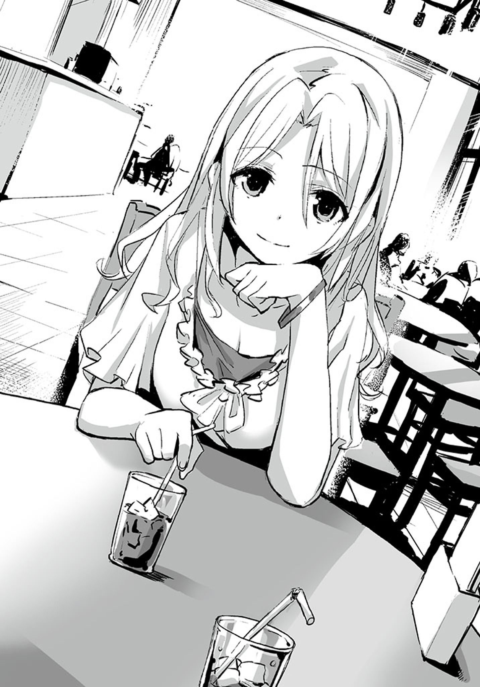
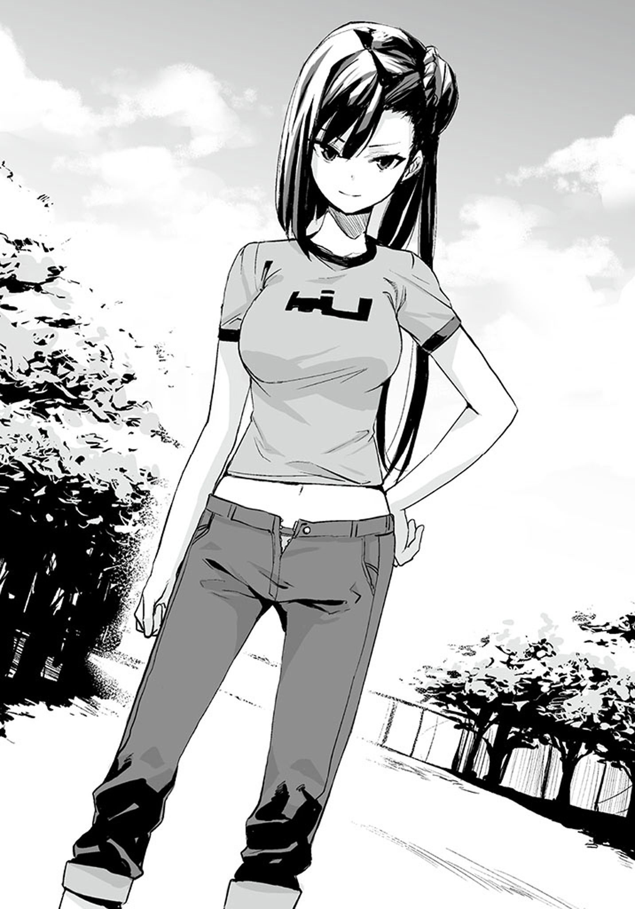

| 双子と幼なじみの四人殺し２【立ち読み版】 | |
| 森田陽一 | |





双子と幼なじみの四人殺し２（立ち読み版）
森田陽一

本書に掲載されているコンテンツの著作権等の知的財産権およびその他すべての権利は、ソフトバンク クリエイティブ株式会社または正当な権利を有する第三者に帰属します。
本書の内容を権利者の許諾なく複製・複写・翻案・放送・出版・データ配信（送信可能化を含む）などすることはできません。
カバー・口絵 本文イラスト
saitom
胡桃沢美貴は考える。どうして、このような状況に陥ってしまったのかを。どうして、目の前にナイフで刺された女と──刺した人間がいるのかを。
まず、自分の運が悪いというのは大前提として理解している。ほんの二週間前には、頭のねじが飛んでいる銃を持った女子高生と相対してしまったばかりだし。今もまた似たような状況だ。この運の悪さは筋金入りだろう。自慢できることではないけれど。
そして、自分の運が悪いということ以外で、この状況に陥ってしまった原因は、先週、クラスの文化祭実行委員に立候補したからだろう。
二週間前、彼女の唯一の友達であり、幼なじみでもある清水彦が殺人を犯して逮捕された。そのせいで、彼しか友人のいなかった胡桃沢は学校で孤立してしまった。
胡桃沢は高校一年生の六月から卒業までの期間を一人孤独に過ごすのは、さすがに耐えられそうになかったので友達が欲しくなったのだ。一応、清水彦が起こした事件を切っ掛けにしてできた新山一縷という新しい友達がいるにはいるのだが──あの人間は例外だ。彼女はしばしば癪に障る言動をするし、何より背が高く美人なのが嫌だった。隣にいたくない。胡桃沢も一縷に負けたとは思っていないが、比較されるかも知れないと思うと酷く嫌な気分になるのだ。そして、彼女が自分の目の前で菱川迷悟という男子生徒といちゃつくのも苛ついた──自分は好きな人を失ったばかりだというのに。更に言えば、彼女が誘ってくる遊びが野球だけなのも原因だ。野球なんて何一つ面白くない。一度だけ魔が差して一緒に野球をしたが、そのときは、途中で野球に興じる女子高生という滑稽すぎる自分の姿を客観視してしまい、酷く落ち込んだ。だが、一縷は悪いことをしているわけでもないし、何より彼女は胡桃沢の命の恩人なので何も言えない。そのせいで二重にストレスが溜まる。とにかく、胡桃沢が欲しているのは女子高生として青春を送るにふさわしい〝普通〟の友達であって、決して新山一縷のような変人ではなかった。
そのような事情から、胡桃沢はより良い学園生活と潤滑な人間関係、何より〝普通〟な友人を手に入れるため、クラスの文化祭実行委員に立候補したのだ。クラスの出し物を通じて、一縷以外のクラスメイトと仲良くなる予定だった。夏休みが終わり、秋になり、文化祭が終わる頃にはすっかりクラスに溶け込んでいる──そういう算段だった。自分のちょっとキツめな性格も直そうと思っていた。
胡桃沢は、今日のロングホームルームでクラスの文化祭の出し物が決まったので、早速、文化祭の教室使用申請を生徒会に出しに向かった。この書類は本来ならば、先週の内に提出しなければならなかったのだが、先週のロングホームルームではクラスの出し物が決まらなかったので、今日にずれ込んでしまったのだ。だから、彼女は生徒会の人間に文句を言われることを覚悟して、ここに来た。でもその程度、クラスメイトと良好な関係を築けるなら安いものだ。
胡桃沢は、ほんの少し呼吸を整えてから生徒会室のドアを開けた。しかし、生徒会室には書類を受け取れるような状態にある生徒会役員が一人もいなかった。
だが、人がいなかったわけではない。明らかに生徒会の人間ではない人間が一人いた。
そいつは丈の長いレインコートをフードまですっぽりと被り、マスクと大きめの黒縁眼鏡、それに軍手を着用していた。胡桃沢より一回りは背が高い。そいつの手には妙な曲線を描いている刃渡りの長いナイフが握られていて、更にレインコートには所々血が付いていた。間違いなく不審人物。というより、絶対的に危険人物。できれば一生、遭遇したくないタイプの人間。
そいつは胡桃沢が生徒会室に入ると同時に、生徒会役員であろう女子生徒の胸のど真ん中にナイフを突き立てた。刺された女子生徒の周りには死体が三つ転がっている。多分、生徒会の人間たちだ。行事の挨拶などでよく見る顔──生徒会長も既に首と胸を刺され、絶命していた。
ナイフを突き立てられた女子生徒の体は一瞬びくんと痙攣するように小さく跳ね上がったが、すぐに動かなくなった。
胡桃沢はこのとき、恐怖よりも驚きが先行していた。そして、腰を抜かして床に座り込んでからは、何故か恐怖を通り越して、文化祭実行委員に立候補したことを後悔していた。
机と椅子が乱雑に散らかっていて、跳ねた血や、流れた血で床や壁が汚れた生徒会室──そして、四つの死体を見ても、何故か恐怖を感じなかった。そのシチュエーションが、あまりにも非現実的すぎて、なんだか殺人という感じがしなかったのだ──人が人を殺しているような気がしなかったのだ。人が人に殺されているような気がしなかったのだ。そこにあるのはショーのような作り物臭さだけで、自分がそれに関係するとは思えなかったのだ。
胡桃沢美貴は今、そんな状況にあった。
彼女の目の前にいる危険人物は、女子生徒の胸に深々と刺さったナイフを引き抜き、レインコートのポケットからタオルを取り出して、ナイフを綺麗に拭くと、胡桃沢の方を向いて、一気に距離を詰めてきた。
胡桃沢は、
（ああ、殺されるのか......）
と思った。だが、またも感情は恐怖を通り過ぎてしまい、今度は諦めに行き着いた。
しかし、そのナイフを持った人間は胡桃沢のことを素通りし、胡桃沢が開け放った生徒会室のドアを閉めただけで、それ以上は何もしてこなかった。
目の前の危険人物は胡桃沢を見下ろし、ナイフを逆さまに持ち直すと、その手の親指をマスクに引っかけ、下にずらし、口を露出させ、
「......困ったわね。なんで今日、外部から生徒会室に人が来るんだろう？」
と、つぶやいた。

胡桃沢は、今度は苛ついてしまった。困ってるのはこっちの方だ、と。
彼女は、見定めるように胡桃沢のことを上から下までくまなく見ると、
「ワタシね、十二人殺そうと思っているの」
と、言った。この言葉は、先のつぶやきとは違い、確実に胡桃沢に向けたものだった。
「でね、ワタシね、どうやって殺すのが一番いいかなって考えたの。一応、これからの話の前提として、最後に殺す人数は三人だってことを憶えておいてね。──もしね、五人殺して、四人殺して、三人殺すとさ、五・四・三と来て、まるでこれから、二人と一人を殺すみたいな感じがするじゃない？ だからきっと、みんなは三人殺した時点でワタシに期待しちゃうと思うのね。あと三人殺すんじゃないのかなって。でも、ワタシは十二人しか殺さない予定じゃない？ だから、変な風にみんなを期待させるのも悪いと思ったの。そうすると、五・四・三は却下でしょ。でね、三人を四回殺すって手段もあるけど......それって、なんか、つまらないよね？ インパクトがないでしょ。変化がないっていうのはつまらないものね。それに、殺人がいつまで続くか分からないからちょっと怖いじゃない？ みんなを本当に怖がらせるのはだめ。いや、少しは怖がってもらわなきゃいけないんだけど──なんて言うのかな、本当の恐怖を与えるのが目的じゃないの。お化け屋敷とかホラー映画みたいな恐怖であることが重要ね。終わりがある必要があるの。だから、これも却下。九人殺してから、三人殺すってのもダメ。だって、いきなり殺す人数が三分の一って......きっと、みんなをがっかりさせちゃうよね。だから、却下。──で、ワタシが一番いいと思うのはね。四人殺して、四人殺して、一人殺して、三人殺すっていうパターン。三回目にまた四人殺されるのかという期待を裏切って、がっかりさせつつも、最後に三人を殺して一気に三倍にすることで、それを帳消しにするの。まぁ、落差を狙ってみんなを満足させるわけね。ワタシね、十二人殺すにはこれが一番いいと思ったのよ」
胡桃沢にはそいつの言っていることが、全然理解できなかった。『みんな』というのが誰を指しているのか分からない。そもそも、なんの話をしているんだ、という感じだ。
「ワタシね、だからね、あなたを今ここで殺したくはないの──殺すとしたら三回目の一人のときね。だから、凄く困っているの......あなたをどうしようかなって。殺さずに口封じをしなきゃいけないわけじゃない。喉と腕と目と足をかっ切って放置するってのもよくないよね。まるで、殺し損ねたみたい。美しくないよね。拉致って監禁するしか方法はなさそうだけど、それってやっぱり、リスクが高いじゃない？ ワタシだって、四六時中あなたを監視しているわけにはいかないしね。もちろん、ワタシのことを人に言わないから見逃して下さいってのは、なしよ。だって、ワタシとあなたの間には、そこまでの信頼関係はないものね。もちろん、今、この場でそのレベルの信頼関係を築いてくれるっていうのなら、考慮はするけど......まぁ、無理よね。信頼って作り上げるには時間が掛かるものね。壊すのは一瞬で済むけど。──そして、ほかの手段は、あなたを殺したあと死体を隠すって方法。でも、殺す人数がブレるのは好きじゃないのよね。ポリシーっていうのかな？ イズムっていうのかな？ ワタシの殺しの美学っていうのはちょっと言い過ぎかな？」
そいつはそこまで言うと、胡桃沢を見るのをやめて、うんうん唸りながら、生徒会室をぐるぐると歩き回り始めた──上手く血を避けながら。そして、急に立ち止まり、
「ちょっと、することがあるから待って。逃げたら殺す──っていうのもおかしな話だよね、殺されるから逃げられないのに。正しくは逃げようとしたら殺す、かな？」
と言って、近くのバッグからロープを取り出した。そのロープは既に加工がされており、片方の端に直径三十センチほどの輪が作られていて、もう片方にはボルトが三本くくりつけられていた。そいつは、それを四セット取り出すと、最後にドリルドライバを取り出した。
「これで気付いてくれれば、御の字なんだけどね」
そいつは独り言を言うと、近くの机を二個、縦に重ねて、その上に乗った。そして、先程のロープの端のボルトをドリルドライバで天井にねじ込んでいく。それを四回繰り返し、天井から輪っかが四つ垂れ下がっている状況を作り出した。そいつはそれが終わると、生徒会室に転がっている死体を重そうに引きりながら、それらの首を輪に通した。まるで首吊り自殺のような形だ。
胡桃沢はそいつが何をやっているのか分からなかった。何故、既に死んでいる人間の首を吊っているのか分からなかった。死体に刺し傷という、完全無欠に他殺だという動かぬ証拠があるのに、今更自殺に見せかけている──わけではないだろう。
そいつは、すべての死体を吊るし終えると、胡桃沢の方を向いた。そいつの背後には血まみれの部屋と、等間隔に吊るされた四つの死体がある。
「決めたわ。ワタシね──あなたを拉致するわ。難易度は少し上がるけど、まぁ、それも一興でしょう。レッツポジティブシンキング」
そいつは、眼鏡の奥の目を笑顔の形に歪ませると、右手の軍手を嚙んで外し、素手になった手を胡桃沢の方に差し出してきた。
「ワタシね、あなたの名前が知りたいかなって思ったりして？ これから拉致監禁共同生活を送る相手だものね。まぁ、ワタシの名前は知らなくてもいいわ。どうせすぐに使わなくなる名前だから」
胡桃沢はほんの少し逡巡した末、
「............私は胡桃沢美貴。よろしくね」
と言って、そいつの手を取ることにした──つまり、拉致監禁される道を選んだ。今ここで殺されるよりは、とばっちりではなく、自分の責任で死ねるだけマシだと思ったからだ。
【六月十日──喫茶店】
三川ミミは喫茶店で人を待っていた。
待っているのは三川の勤める、城崎南高校の二年生の女子生徒。彼女は、迷悟と双子が過去に起こした事件を捜査していた刑事の娘だ。
その刑事は、あの事件の真相──双子が両親を殺したという事実に り着いていた。しかし、その刑事は真相を暴ききることができず、最終的に自殺した。何故真相を暴けなかったのか、理由は三川が調べた限りでは判然としなかったが──双子が殺したという証拠がなかったわけではないだろう。多分、いくらかは証拠があったはずだ、完全に殺人の証拠を消すなんてことは無理だ。ましてや、中学生の犯行──簡単に看破できるものだったはずなのだ。つまり、真相を暴けなかったのは別の何かが影響していたということだ。三川が予想するに、単純に面倒くさかったのだと思われる。殺人事件というのは面倒くさいのだ。自殺は事故で処理すれば終わりだが、殺人事件の場合はそうもいかない。しかも子供三人が犯人だなんて、やりにくいことこの上ない。絶対に担当したくないはずだ。──もちろん、これは三川の推論であって違うかも知れないが。
り着いていた。しかし、その刑事は真相を暴ききることができず、最終的に自殺した。何故真相を暴けなかったのか、理由は三川が調べた限りでは判然としなかったが──双子が殺したという証拠がなかったわけではないだろう。多分、いくらかは証拠があったはずだ、完全に殺人の証拠を消すなんてことは無理だ。ましてや、中学生の犯行──簡単に看破できるものだったはずなのだ。つまり、真相を暴けなかったのは別の何かが影響していたということだ。三川が予想するに、単純に面倒くさかったのだと思われる。殺人事件というのは面倒くさいのだ。自殺は事故で処理すれば終わりだが、殺人事件の場合はそうもいかない。しかも子供三人が犯人だなんて、やりにくいことこの上ない。絶対に担当したくないはずだ。──もちろん、これは三川の推論であって違うかも知れないが。
そして、その刑事は警察組織内の多数派に負け、真相を暴ききれず自殺した。彼が自殺した理由は、組織に対する自分の無力さとか、警察組織への失望とか、大体の想像は付く。しかし、三川は、それらは自殺の理由としては乏しいと思えた。きっと、今までもそういう事態はあったはずだからだ。それはもちろん、警察に入る前の人生も含めてだ。自分の思いどおりにならないことや、正しくないことがまかり通ることなんて、いくらでもあったはずなのだ。もし、彼の自殺に対し、好意的に理由を推測するならば、彼にとってこの事件はどうしても譲れないものだった、ということになるかも知れない。
どうやら、彼の遺書も残されていたようなのだが、それについては公表されていなかった。多分、その刑事の家族と警察との間でなんらかの取引があったものと思われる。これは警察としてはあまり出されたくない情報だ、この場合は公安かも知れないが、多少の金で握り潰したのだろう。そもそも、刑事の家族にそれを公表する手段がなかっただけかも知れないが。
この事実は先月、三川が迷悟と双子を調べているとき、運良く見つけられたものだ。あの三人にある意味、父親を殺された女子高生、迷悟と双子にちょっかいを出すための道具としては申し分ないだろう。
その女子生徒は、三川が席に着いてから数分で、店内に入ってきた。彼女は三川を見つけると、小さくお辞儀をして、三川の対面に座り、アイスティーを頼んだ。
「今日は来てくれて、ありがとね」
三川は微笑みながら言った。
彼女は三川の言葉には応えず、店内をぐるりと見回したあと、三川の方を向いた。しかし、特にその表情に変化は見られず、彼女はただ三川の視線を自然体で受け止めていた。
「あなたのお父さんの話が聞きたいと思ってね」
「私の父の話ですか」
「そう、あなたのお父さん──自殺したお父さん」
三川はあえて、『自殺した』と言い直したが、彼女の表情には全く変化がない。
（......？）
三川はこの反応に疑問を覚える。彼女は父親の死がショックで一年休学していたのだ──だから彼女は十八歳ではあるが、高校二年生をやっている。そんな彼女が、今の言葉に全く反応を示さない。いささか不自然に思えた。
（一年間で克服したのかしら？ 休学するほどのことだったのに？）
しかし、これは本題ではない。今日、話したいことではない。ここで、こんなことを追及しすぎて、彼女の気分を害しても意味はない。三川は話を進めることにする。
「あなたのお父さんが自殺をした理由の事件──憶えてる？」
「ええ、憶えていますよ」
「あなたは、あの事件についてどこまで知ってる？」
「どこまでも知っていますよ、誰が誰を殺したかってところまで」
三川は、ふふふ、と小さく笑う。
「なら、話が早い。あなた──復讐とかしてみたくない？ 手伝ってあげてもいいわ。あなたの仇がこの学校にいるのは......知っているわよね？」
「ええ、知っています。しかし、何故、三川先生がそんなことを？」

「深い意味はないわ。面白そうだからよ」
そこで、ようやく彼女の表情に変化が表れた。彼女は口をほんの少し笑顔の形に歪ませた。
「ええ、そうですね。復讐っていうのは中々面白いですね。自殺した父の無念を晴らすため──真実を世に知らしめるため、孤軍奮闘する女子高生。中々良いですね、そういう筋書き。三川先生が手伝ってくれるというなら、孤軍奮闘ではないですが。で、三川先生はどの程度の復讐を想定していらっしゃるのですか？」
「と、言うと？」
「例えば、嫌がらせをするだけとか。例えば、事件の真相を公表するぞと脅して、金を取ったり酷いことをしたりするとか、例えば、同じ目に遭わせる......のは無理か。彼らには自殺する親はいないのでしたね。──ほかにはもっとシンプルに殺しちゃうとか」
三川は目を細め、彼女を見る。なんだか、彼女は想像以上だった。先の言葉は本気の言葉だった。いや、本気とは少し違う。蚊が飛び回っているとき、蚊を殺すために特別な殺意を抱かないように、彼女には強い殺意というものが存在していないように、感じられた。彼女は先に挙げた嫌がらせの例と同程度の感覚で人を殺すという選択肢を持っているのかも知れない。
「復讐の方法は好きなようにしていいわ」
「じゃあ、殺しましょう。菱川迷悟と新山一縷と新山朽縷を殺しましょう」
即答だった。
もしかすると、彼女にとって殺意というものは最早、デフォルトの感情なのかも知れない。それほどまでに、父親を間接的に殺したあの三人を恨んでいるのかも知れない──先の『自殺した』という言葉に反応しなかったのは、殺意が恒常的なものであるがためであろう。三川はそう考察した。
「あなたはそこまで、お父さんのことを慕っていたってわけね」
三川が少し笑いながら言うと、彼女の視線がにわかに鋭くなった。
「勘違いしないで下さい」
彼女はぴしゃりと言って続ける。
「捜査で自分の意見が通らなかったからって、自殺するようなクズ人間に対し、私はプラスの感情を一切持ち合わせていません。むしろ、そういう人間が身内にいたことは恥です。死んで清々した、とは正にこのことです。捜査で自分の意見が通らなかったとき、するべきことは更なる証拠集めと、諦めずに自分の意見は正しいと発信し続けることです。それをなんですか？ 遺書に自分の考えをしたためて自殺？ 卑怯極まりない。自分のするべきことを他人に押し付け、自分だけ逃げる──まるで子供のよう。本当に恥ずかしい。生き恥どころか、死に恥まで晒しやがったのですよ。実に情けない」
その言葉を言った彼女の様子は、やや芝居がかっていた。しかし、何を隠すために彼女がそんな物言いをしたのか三川には分からなかった。しかし、何かを隠しているのは確実だ。
三川は彼女の心の深層を計慮するのを一旦やめ、聞く。
「............そう。お父さんに執着がないのに──なんで復讐しようと？」
「インパクトがあるじゃないですか。そういうシチュエーションって」
彼女は、さも当然、といった感じでそう言った。
六月十八日、火曜日。その日は朝からずっと雨が降っていた。気温はそこまで上がっていないのだが、エアコンをつけないでいられるほど快適ではない。
菱川家のリビングには平日だが、菱川迷悟と新山朽縷がいた。学校が昨日発生した殺人事件の現場検証のため、休校になったからだ。
迷悟はソファーに座ってテレビを見ていた。隣では朽縷が同じようにソファーに腰掛けテレビを見ている。
テレビでは迷悟たちの通う城崎南高校で起きた殺人事件のニュースを特集で放送していた。
昨日の夕方、生徒会に所属する四人の生徒が生徒会室で殺害された。凶器は刃物。彼らは胸や首を刺され、失血と外傷性のショックで死亡した。不可解なことに四人の死体は天井からロープで首吊りのような状態にされていたらしい。しかし、死因は先の刺傷であって、絞殺でないことは、確定している。死亡推定時刻から予想される犯行の時間は午後四時頃。生徒会の会議の開始時刻だったということだ。そのとき、校内にはまだ人がいたものの、校舎の端にある生徒会室の付近には人がおらず、目撃者はおろか、物音を聞いた人間もいなかった。
番組の内容は事件の概要よりも、生徒会にいた人間の生い立ちにスポットを当て、遺族へのインタビューなんかを交えながら──どちらかといえば、この事件を悲劇に見立てて、視聴者の興味を引こうとしているようだった。犯人像の推察なんかも軽くしているようだが、まだ情報が少なすぎるため、曖昧なことしか言っていない。何度も、同じ情報を出しながら、随分と長い時間を割いて放送していた。
「......犯人はきっと、学校の生徒、もしくは関係者だね」
朽縷は少し声を落として言った。
「どうしてだ？」
迷悟は、朽縷がそれを断定できた理由が分からなかったので、聞いた。
「あの時間、あの場所に人がいないことを知っていたってことは──ほとんど、そうだと思う。たまたまってことはないよ。というか、よく調べているなって感じだ。私だってそんなことは知らなかった。迷悟だって、知らなかっただろう？」
「まぁな。四時頃だと、俺らは大抵帰っちゃってるしな。部活とかやっているやつなら知っているのかも知れないけどさ」
「そうだね」
二人はそこで話すのをやめる。
番組の内容は既に城崎南高校での事件からほかのものに変わっていた。迷悟はなんとなくこの部屋にテレビの音だけなのが、居心地悪く感じたので、
「休校ってさ、いつまでだっけ？」
と、目はテレビに向けたまま、朽縷に聞いた。
「無期限って話だったな」
「今年二度目だよな」
「そうだね」
「......夏休み減るのかな？」
「どうだろう？ なんとも言えないな。夏休み自体は減らさないけど、強制参加の補習があるかもね。補習っていう単語は響きが悪いから、夏期講習って名目かも知れないけど」
迷悟たちの通う城崎南高校は進学校なので、そういうところは意外と厳しく行われる。それに、二年生以降は休校があろうがなかろうが、二週間ほど夏期講習がある。参加は自由となっているものの、九割以上の生徒が参加する類のものだ。
「──なんだかんだで夏休みは減るんだろうなぁ」
迷悟はぼやくように言った。もちろん、どちらにせよ休みの数はほとんど変わらない。それどころか、フルで夏休みがあるよりも、休校が増えた方が休みの数自体は多くなる。それでも、迷悟は夏休みが減るのはなんとなく嫌だった。夏休みと普通の休みは違うのだ。何がどう違うか聞かれたら、明確で万人を納得させられるような答えを出すことはできないが──とにかく夏休みと普通の休みは一線を画しているのだ。
「夏休みが減る可能性は高いね」
朽縷がややトーンを落として言った。
「あっ、夏休みの宿題が増えるってのもあるかも知れないな。朽縷は宿題が増えるのと、夏期講習だったらどっちがいい？」
「うーん。正直、どっちでもって感じだね。強いて言うなら、半々で増えるのがいいかも。暑い中、学校に行くのは嫌だけど、夏の登校日とかって、案外楽しかったりするからね」
「なんだ、その意見、朽縷っぽくねーぞ」
「そうか？」
朽縷は迷悟の方を向くと、首をかしげた。
「うん」
朽縷はなんだか、複雑そうな顔をしていたが、
「......まぁいい。迷悟はどうなんだ？」
と、切り替えるように聞いた。
「宿題が増える方がいいな」
「理由は？」
「いざとなったら、朽縷と一縷に見せてもらえる」
「......真面目に勉強しないと、後々面倒くさくなるぞ、大学受験のときとか。一から積み上げるのはきっと大変だぞ」
「高一のときから大学受験なんて考えたくねーよ」
「大学受験とまではいかなくても、二学期に困るかも知れないぞ」
「だな......ちゃんとやるしかねーか」
迷悟は足を伸ばし、体をソファーから少しずり落とす。
「それに、迷悟は宿題をやらないような人間じゃないだろ？」
「まぁな。でも、すげー量が多かったら......やっぱな。だるいし」
朽縷はそこで小さく笑った。
「結局、夏休みがどうなるかは分からないね。できれば、授業を早足で進めてもらって、暦どおりのスケジュールで行くのが望ましいね」
「それが、一番いいな。化学の実験とか、いらないの削ればいいし」
「うん。そうだね」
迷悟と朽縷にとって、この殺人事件が対岸の火事以上の意味を持つことはなかった。自分たちと関係のある近しい場所で起きた重大事件ではあるが、それでもだ。もちろん、彼らだって、この事件の四人が首を吊られていたということが、自分たちの過去の事件と類似していることには気付いていた。だが、十中八九たまたまだろうし、何より話題に挙げたくなかったので、そのことについては何も話さなかった。というより、ほとんど考えないようにしていた。
＊
──時を同じくして、城崎南高校の保健室。
三川が保健室に入ると、そこには既に吉崎善果がいた。彼女はベッドに寝っ転がり、携帯用ゲーム機で遊んでいる。
「ねぇ、善果ちゃん。なんで学校にいるの？」
三川は聞いた。三川が学校に来たのには理由がある。警察の捜査状況を把握するためと、前に休校で人のいない学校に来たとき、中々居心地の良い空間だったので、また来たいと思ったからだ。しかし、吉崎がいる理由は分からない。そもそも今日、校舎内に生徒は立ち入ることができないはずだ。仕事のある教員は特別に入ることができるが──それも一応、緊急の用件がある人間だけ、という建前に近い制限があってのことだ。
吉崎はのっそり起き上がって、三川の方を向くと、
「深い理由はないです。そして、浅い理由もないです。理由なき登校です」
と、答えた。
「どうやって校舎内に入ってきたの？ 警察の人とかいたんじゃない？」
「三川先生師匠のカウンセリングがあるんでって言いました。止められたけど、暴れながら叫びまくったら、通してくれました」
吉崎善果は立場的には一応、二週間前の事件に巻き込まれた可哀想な生徒ということになっている。それに伴い、カウンセリングという名目で保健室に居座ることが多くなった。もちろん、本当は全然可哀想ではないし、カウンセリングだって必要ないのだが。
「......まぁ、いいわ」
三川は呆れたように言うと、椅子に座り、バッグから携帯電話を取り出し、どこかへ通話を始めた。
「もしもし、元気ー？」
『お掛けになった電話番号は現在使われておりません。ピーという発信音の後にメッセージを入れて下さい』
「ばぁーか。なんで電話が使われてないのに、録音が始まるのよ？」
『あっ......ちょっと恥ずかしいな。ちなみに俺は元気じゃねーよ、絶不調！』
「ん？」
三川の眉間に皺が寄る。
「お前、今どこにいる？」
『家、おうち、マイハウス、狭いながらも楽しい我が家』
「明らかにＢＧＭがパチンコ屋なんだけど。ていうか、店内放送まで聞こえる」
『耳悪くなったんじゃね？ ミミだけに。っつーか、その三川ミミって名前ふざけすぎだろ？ もうちょいマシな名前にすりゃ良かったのに。今、俺がメインで使ってる名前なんてすんげぇかっこいいだろ？ 惚れるだろ？ いや、惚れなくていいけど』
「ふざけてんのはてめーだ。人に借りた金返さずに、なんでパチンコ屋行ってんのよ？ 汗水たらして、どっかでバイトでもしてこい、なんなら臓器でも売ってこい」
『返すって。絶対に返す。マジで返す。今日勝って、風俗行って、余った金で返す』
「ほー、三桁万円も余ると？ というか三桁万円も勝てると？」
『今月はトータル収支が余裕でプラスだから、このままいけば、再来月には可能だ』
「......まぁ、いいわ。仕事よ、前に少しだけ話したやつ」
『面倒くさい。っていうか今、打ってるから後にしてくれや』
「あぁ？ 金玉抉り出して、串に刺して、銀杏みてぇにして、食わせるぞ？」
『あー......思い出しちまった。昔、食わされたんだよな。金玉っつーか、睾丸。もちろん、人のじゃなくて、豚かな？ 牛だったかな、の。まぁ、不味くはねーんだけどさ......気分がさ。今、思い出しても吐きそうだ。吐いたら出禁になるかも。我が家だけど出禁になるかも』
「下らないこと言ってないで、一時間以内にこっちに来ること。結構緊急な用件。すぐにでも人手が欲しいんだって、少なくとも休校が終わるまでには」
『え、学校行かなきゃいけねーの？』
「小卒低学歴の君に高校はちょっと敷居が高いかな？」
『んなこというなら、テメーの最終学歴はなんだよ？』
「大卒よ」
『保健室の先生って専門学校じゃねーの？』
「馬鹿に説明するのは面倒だから、きちんとは説明しないけど、免許が何種類かあるの。私のは大卒で取れる免許」
『いくら積んだんだ？』
「大学ぐらい卒業できるに決まっているじゃない。小卒のあんたは知らないだろうけど、今の大学は高校の続きみたいなもんよ。行ってれば卒業できるの。ってか、そんなことはどうでもいい。とにかく来い。ちゃんと仕事すれば、成功報酬のほかに、借金一割減らしてやるから」
『まじで!? まじで!? あー、でも、昼飯食ったあとでいい？ お腹ぺこぺこで死ぬかも。今日、タバコしか吸ってない』
「しょうがない、妥協してやろうじゃないか。クズが、まじで死ね、さっさと死ね」
『超サンキュー、超死なないけど、超ベリーサンキューマッチ』
「出た、低学歴語順。じゃあね」
三川はそこで通話を終了させた。
「一番弟子さんですか？」
と、吉崎が聞いた。彼女は寝転びながら、ゲームをしている状態で教師に話し掛けているので、舐めきった態度ではある。──三川はそれぐらいでは腹を立てないが。むしろ、そういう方が気楽でもある。もちろん、相手によりけりだが。
「そう、これから、あいつにちょっと仕事をしてもらうの」
「そうなんですか」
「ところで、善果ちゃん、最近ちゃんと授業出てる？ 保健室にいる時間がやたら長い気がするんだけど」
「面倒くさいので出てないです。保健室に行くって言っておけば出席扱いになりますし。それにもし、保健室に行くのが出席扱いにならなくても、普通に卒業できるくらいは出席してますよ。体育とかはだるいのでかなりギリギリですけど」
「あっそう、ずるいのね。善果ちゃんは何か好きな授業とかある？」
「考えたこともないです」
「そう」
三川は椅子から立ち上がり、上着を脱いで、白衣に着替えながら言った。
「三川先生師匠はどんな授業が好きでした？」
「......その三川先生師匠ってやめてくれない？ 先生か師匠のどっちかでいいじゃない？」
「二重敬語みたいなものです」
「敬意が全然伝わってこないんだけどね。そもそも二重敬語って敬意を表す手段としては大間違いだし。まぁいいや。私は学校ってほとんど行ったことないから、どんな授業に対しても好きも嫌いもないわ」
三川は自分の椅子に座ると、くるっと椅子を回して、吉崎の方を向いた。
「さっきの電話で大卒だって言ってませんでした？」
「うん。大卒よ。学校は行ってないけど」
「お金で買ったんじゃないとも言ってませんでした？」
「資格っていうのは私レベルになると、試験を受けて獲得したり、お金を積んでゲットするものじゃなくて、ただで貰うものになるのよ」
「そうなんですか」
「そうなのよ」
「うらやましいです」
「何か欲しい資格でもあるの？」
「............特にはないですね。強いて言えば、運転免許でしょうか」
そこでようやく吉崎はゲームをやめ、ベッドに座る形で、三川の方を向いた。
「へー、なんで？ どっか行きたいの？ 旅行とか？ それなら夏休みにでも連れて行ってあげようか？ っていうか、私も運転免許はさすがに教習所に行って取ったわよ、危ないし」
「いえ、旅行じゃないです。免許が欲しいのは車が運転したいわけじゃなく、就職のとき、潰しがきくからです」
「えっ、進学しないの？」
「ちょっと迷い中です」
「この学校、進学率ほぼ百パーよ。こんな学校通っているのに就職したら無駄じゃない？ 勉強したくないタイプ？」
「大学って......なんかよく分からないです。一人暮らしできるならそれもいいんですけど。それよりもまずは家を出たいかも」
三川は彼女の家庭環境に何かあるのかも、と思ったが、索をするのはやめておいた。それにあっても、大した問題ではないだろう。きっと、思春期にありがちな悩みだ。
「まぁ、私が言う台詞じゃないけど......とりあえず、適当なレベルのところでいいから、大学は行っといた方がいいわよ。運転免許と同じくらい潰しがきくから。もし、お金の問題があるなら、奨学金だってあるんだし。なんだったら私が無利子で学費だけなら貸してあげるわよ」
「............考えてみます」
三川はそこで、吉崎との会話を切り上げて、少しだけ残っている学校関連の雑務を終わらせてしまうことにした。
＊
事件から三日後の木曜日。意外にも早く休校措置が終わった。前回の事件のときは一週間の休校だったのに、今回は二日間だ。警察の捜査が早かったのかも知れないし──不謹慎な物言いだが、二度目なので学校側の手際が良くなったのかも知れない。
迷悟と双子は三日ぶりの通学路を歩いていた。彼らが裏門に着くと、そこにはマスコミが一グループ張っていた。カメラを持った人間とマイクを持った人間が一人ずつ、それに加えアナウンサーと、何をしているのか分からない人間がもう一人の四人グループだ。
（裏門まで来るなよ......面倒くせぇ）
迷悟は心の中で愚痴る。
「あの、すいま──」
三人は、マイクを向けてきた人間を無視して、学校の中に入っていった。
普段ならば、一縷なんかは目ざとくカメラを見つけて喋り出しそうなものだが、昨日、連絡網で外部にこの事件のことは一切話さないようにとの学校からの通達があったので、彼らはそれを素通りした。三人はいつもどおり、校舎の脇を通り正門側に回って、下駄箱で上履きに履き替えてから各々の教室に向かった。
迷悟が教室の席に着くと、クラスメイトの尾曲染毬が小走りで近づいてきた。そして、彼女は前の席の椅子に迷悟と向かい合うように座ると、
「すごいね！」
と、少し興奮した様子で言った。
「何が？」
「校門の前、すげー人いっぱい！ 下手したら百人くらい？」
「ああ、マスコミ？ のやつか。正門にはそんなにいたのか。少しだけど裏門にもいたな。ほんと、どっから湧いてきたんだよって感じだよな」
「テレビ局からじゃない？」
尾曲は急に素の表情に戻って言った。
「いや、そりゃ分かってるけど」
「生徒会の人が四人も殺されたんだってね」
「らしいな。でも生徒会って、もうちょっと人いたよな。六人ぐらいだっけ？」
尾曲が人差し指を立てて、揺らす。
「七人だね」
「三人は生きてたのか？」
「まぁ、生きてたといえば、生きていたんだけど、生徒会室にいなかったんだよね。その三人は。その人たちは三年生なの」
「なんで三年だと生徒会室にいないんだ？」
「受験だからだよ。名目上の生徒会役員だからね。──っていうかなんで菱川君知らないの？ 普通、知ってるよ？ 生徒会の仕事は二年生と一年生が全部やるの。三年生が在籍するのは大学受験の推薦とかの対策だったかな。まぁ、推薦も考えるけど、勉強してもっといい大学を狙うかも知れないから、って理由で三年は仕事を免除されているんだよ」
「へー、そんなんあるんだ......」
迷悟がそう言うと、尾曲は顔をぐいっと迷悟に近づけ、
「生徒会の殺された人たちなんだけど、財布を盗られてたんだって」
と、先程よりも小さい声で言った。事件に直接関わりのある内容なので、周りに聞こえないようにしたのだろう。尾曲にしては珍しい配慮だ。
「財布？」
「そう、財布。テレビでは言ってなかったけど。そういう。お金目当てなのかな？」
迷悟は少し考えて、
「金目当てはあり得ないな」
と、尾曲の声量に合わせ、少し小さい声で言った。
「なんで？」
「高校生の財布の中身なんてたかが知れてるだろ？ わざわざ殺してまで盗るようなモンじゃねーよ。それに、財布なんて殺さなくても、カツアゲで十分手に入るだろ？」
「菱川君、カツアゲしたことあるの？ しそうだけど」
「ねーよ！ 例えだ。例え。それに〝しそう〟ってなんだ？ ふざけんな、ぶっ殺すぞ。......まぁいい。話戻すぞ。で、もし、金が欲しくて四人殺すなら──もっといい相手がいくらでもいるだろ。ちょっと大きめの家に侵入して一家全員殺したほうがもっと実入りが多い。リスクはほぼ同じだけど、リターンは桁違いだ」
尾曲は若干引いた表情になって、
「菱川君......なんか発想がやばいんだけど」
と、低いトーンでつぶやくように言った。
「だから、例えだっつってんだろ。いちいち、うっせーな」
「まぁ──そう考えると、そうだね。なんで、お財布盗ったんだろ？」
尾曲はこめかみに手を当てて首を傾け、『分かりませんよ』といったジャスチャーをした。
「一番あり得るのは〝ついで〟かな？ 殺したついで。行きがけの駄賃ってやつ。もしくは中に入っているほかの物──たとえば、定期とか身分証明書が欲しかったとか」
「なんか、菱川君。殺したついで、とか発想が出てくるところが怖いわー」
「だから、可能性の問題だって」
迷悟は少しムキになって言った。
「からかっただけだよ。またね」
尾曲はそう言って、立ち上がると、小さく笑って、どこかへ行ってしまった。
迷悟はバッグの中身を机に移し替えながら、教室の様子を見てみる。
今回は前回の事件とは違い、この話をしている生徒は少なかった。きっと、殺された生徒と関わりのあった生徒が多いので、遠慮しているのだろう──先の、迷悟と尾曲のように、この事件のことを話している生徒は少数派だった。もっとも、休校期間にテレビのニュースを散々見たせいで、既に飽きているだけかも知れないが。
そのあと、クラスではＨＲの時間をほとんど使って、担任から今回の事件に関する諸注意を言い渡された。昨日、連絡網で回ってきた内容とほとんど同じではあったが。これは学校側としてもよっぽど念を押さなければならない事態ということなのだろう。
迷悟はこのタイミングでようやく、ことの重大さを認識し始めた。生徒会の事件は自分とは関係のないこととしか思っていなかったが、生徒会と自分の距離を学校に来ることで再認識し、近くで殺人事件があってまだ犯人が捕まっていないことに不安になるとともに、なんだか暗い気持ちになった。
＊
新山朽縷は憂鬱だった。
今日は保健委員会のミーティングの日。また、三川と顔を合わせなければならない。真面目な朽縷も今日ばかりは本気でサボろうかと思った。しかし、サボったら、三川が何をしてくるか分かったものではない。三川は朽縷と一縷の秘密を知っている。──だから、朽縷は仕方なく、ミーティングの教室に向かうことにした。
彼女は廊下でため息をついた。
しかし、どんなにため息をついても、足を動かしている限り、目的地には着いてしまう。朽縷は教室の前で一旦立ち止まって、覚悟を決めてからドアを開けた。
教室には既に三川がいた。彼女は教卓のところでノートパソコンをいじっている。先月は携帯電話で遊んでいたので、マイナス方向にランクアップしたという感じだ。
しかし、保健委員のメンバーは一人もいなかった。その代わりなのか──吉崎善果がいた。彼女は二週間前に、警察官二人と男子生徒を一人殺したものの、三川が工作をして、何故か無罪放免になった二年生の女子生徒だ。に聞いた話だと、最近は保健室に入り浸っているらしい。彼女は学校内でしかも教室内だというのに、携帯ゲーム機の音量をオンにして遊んでいた。
「朽縷ちゃん。来たのね。来ないかと思っていたわ」
三川はいかにも面白がっているという風な口調で、パソコンから目を離さず、朽縷に声を掛けた。
「......ええ、仕事ですので」
朽縷は嫌みの一つでも言ってやろうと思ったが、その行為にあまりメリットがなさそうだったのでやめておいた。
「真面目ね」
「で、ほかの保健委員の人間はまだ来ていないのですか？」
「多分、来ないと思うわよ」
「どういうことですか？ また何かしたのですか？」
「私が何かをしたことなんて、一度もないわよ」
三川はしれっと噓をついた。彼女はノートパソコンから目を離し、朽縷の方を見ると、
「大体、この時期になると、みーんな保健委員会に来なくなるのよ。毎年ね。前も説明したよね？ 二学期には確実にゼロになるわ。前回のポスター作りは朽縷ちゃんしか来なかったでしょ。あれがターニングポイントね。あれで、みんなサボっても大丈夫だって思ったみたい」
と、言った。
「つまり、三川先生、あなたが怒らなかったのが、いけないのでは？」
「私は褒めて伸ばすタイプなの。そして、私が褒めて伸ばすタイプである限り、生徒は褒められて伸びるタイプなの」
「帰っていいですか？」
「急に何を言い出すの？ だめに決まってるじゃない。朽縷ちゃんは私と遊ぶのよ？」
「遊びません。保健委員としての仕事をさせていただきます──で、もう一つ。なんで吉崎先輩がいるのですか？」
「なんでだろ？ 私も知らない。ねー、善果ちゃんは、なんで、ここにいるの？」
吉崎はきょろきょろと、やや暗い表情で朽縷と三川を交互に見た。彼女は癖の付いたボリュームのある髪型をしている。前に見たときは、鬼気迫る表情をしていたこともあり、分からなかったが、彼女はどことなく愛嬌のある顔をしている。──だからといって決して会いたい人物ではないし、可愛いとも思えなかったが。
「三川先生の二番弟子だからです」
吉崎は、なんだか意味の分からない回答をした。
「そっかー」
三川は三川で適当な返事をする。
朽縷もこの二人とは関わりたくないので、スルーすることにした。朽縷がどの席に座ろうかと、教室を見回すと、吉崎が手招きしているのが見えた。朽縷は顔には出さなかったものの、酷く気分が沈んだ。行きたくはないが、無視したら無視したで、決して良い結果にはならないだろう。何をされるか分からない。朽縷は諦めて、吉崎の座っている席に近づいた。
吉崎は朽縷が近づくと、隣の席の椅子をさっと引いて、朽縷に座るように手で促した。
朽縷はその席だけには座りたくなかったが、勧められているのに座らないわけにもいかないので、その机にバッグを置いて、座ることにした。──座るだけで済むなら安いものだ。
「そんなに怖がらなくていいよ。この前のことはもう怒ってないから」
吉崎は妙に人なつっこい笑顔を浮かべ、朽縷に言った。
「......そうですか」
もし、『この前のこと』とやらが二週間前の事件を指しているのならば、朽縷が吉崎に怒られる筋合いはまったくないのだが。あんなもの正当防衛に決まっている。迷悟が殺されそうになっていたのだから。むしろ怒りたいのは朽縷の方だった。
朽縷が特に話すこともないので、黙っていると、
「多分、私の方が朽縷ちゃんよりモテると思う」
吉崎が唐突に言った。一体全体、どこからそんな話題が出てきたのか。朽縷には皆目見当もつかなかった。
「そ、そうですね......」
朽縷はとりあえず吉崎を刺激しないように適当な返事をしておく。
「朽縷ちゃんって隙がないんだよね。悪い意味で。だから、男子はちょっと萎縮しちゃうんじゃないかな？」
（......一体、なんの話なんだ？）
困惑する朽縷をよそに吉崎は続ける。
「その点、私って可愛い中にも、少し抜けたところがあって、モテそうでしょ。ってかモテるんだよね。エロいし」
「はぁ......」
朽縷は、
（あなたの場合は、可愛いとか、可愛くないとかの前に色々問題があるのでは？）
と思ったが、口にはしなかった。その言葉は確実にブーメランのように自分に戻って来るからだ。朽縷にだってそれ以前の問題はある。
「だから、朽縷ちゃんも少し隙を作った方がいいよ」
「はぁ......」
（一体、この人は何が言いたいんだ？）
吉崎はそこでゲームに戻り、何も喋らなくなった。三川は三川でノートパソコンをいじっているだけで、何もしようとしない。
朽縷は吉崎と無言のまま並んで座っているのも気まずいので、
「三川先生、あなたは何をやっているのですか？」
と、聞いた。なんとなく吉崎よりは三川の方が話しやすい気がしたのだ。話しやすいというよりは、まだ話が通じそうに思えた、といったところか。
「監視カメラの映像を見てるのよ」
「そういうのも教師の仕事の内なのですか。警備員さんの仕事だと思っていました。三川先生も意外と仕事熱心なのですね」
「ん？ 仕事じゃないわよ。趣味。私が勝手に取り付けた監視カメラの映像。色んな所に設置してあるから、この学校の様子は大体把握できるわ」
三川は、何故か少し得意げに言った。
「............そうですか」
朽縷はなんだか、あまり聞きたくないことを聞いてしまった気がした。
「──で、三川先生。今日の保健委員会の仕事はなんですか？」
「考えてないわよ」
「............」
「朽縷ちゃんって指示待ち人間ね。そのぐらい自分でどうにかしなさいよ。仕事は自分で見つけるもので、作るものよ。そんなんじゃ、社会に出て通用しないわよ」
「え......あ、はぁ」
朽縷は何故か、遊んでいる人間に怒られてしまった。しかし、会議をするにも、保健委員のメンバーは自分しかない。更に、今まで保健委員としてやった仕事のサンプルは五月のポスター作りだけだ（四月は自己紹介だけで終わった）。はっきり言って手詰まりだ。
朽縷はどうしようもないので、吉崎の隣という最悪なロケーションで、何か仕事がないか考えることにする。しかし、思いつくわけがない。そもそも保健委員会がなんのためにある組織なのかもよく分からない。こんなもの、なくたって学園生活になんの支障もない。
朽縷が結論にり付かない思考を頭の中でぐるぐる回していると、
「ねぇ、朽縷ちゃんもやる？」
と、吉崎がゲーム機を差し出してきた。
「いや、あの......仕事があるので」
朽縷はゲームをする気もないし、吉崎から何かを受け取るのも嫌だったので断った。
「でも、何したらいいか分からないんでしょ？ で、今は何もしてないじゃん。ならゲームしてた方がマシだよ」
「はぁ......」
「やらないの？」
「え、えっと......」
朽縷が吉崎に絡まれて困っていると、三川が、
「しょうがないわねぇ。じゃあ、今月の保健委員の仕事は七月に何をやるか考えるっていう宿題を出して終わりにするわ」
と、言った。適当だ。
「あの......七月に保健委員会の仕事ってあるのですか？」
朽縷は、七月はテストとテスト休みでほとんど終わりだと記憶していた。
「ないの？ んー......じゃあ、八月にやることでいいわよ」
「八月は夏休みです」
「じゃあ、九月」
「分かりました......では、私は帰ります」
朽縷は一刻も早くこの場所を立ち去ろうと、素早くバッグを持って立ち上がる。だが、そのとき、吉崎にスカートの裾を摑まれた。
「な、なんですか？」
「今度、一緒に遊ぼうね、朽縷ちゃん」
「............え......ええ、分かりました。日程が合ったらということで」
朽縷は『遊ぼう』という吉崎の申し出を断ると、何をされるか分からなかったので、とりあえず、了承してしまった。教室から出た後、もの凄く後悔したが。
＊
迷悟と一縷は、学校が終わったあと、保健委員の仕事で遅くなる朽縷を置いて、先に帰り、野球をしにいくことにした。梅雨の中休みで久しぶりに晴れたからだ。とはいえ、二人しかいないので、キャッチボールかノックをするしかないのだが。
二人は短パンとＴシャツといった出で立ちで近所の公園に向かう。
「そうそう、今日、胡桃沢が学校を休んでたよ」
道中、一縷が何気なく言った。
「そういや、あいつ、今日の昼飯のとき、いなかったな」
迷悟と双子と胡桃沢は、いつも四人で一緒に昼食を食べている。迷悟と双子は胡桃沢と特段仲が良いわけではないのだが、成り行きでそうなっている。
「多分、胡桃沢が学校休むのは初めてだよ」
一縷はボールで手遊びをしながら言った。
「まぁ、高校始まってから二ヶ月とちょっとしか経ってないから──大抵のやつは一度も休んでないけどな、俺らも休んでないし」
「そだね」
「あれだな、風邪でも引いたんじゃねーの？ 季節の変わり目だ──」
すると、一縷が迷悟の言葉を遮って、突然、

「あっ、そうだ！ 胡桃沢も野球に誘おうよ？」
と、言った。
「なんで、そうなるんだよ？ 俺は今、風邪引いたかも知れないって言ったんだぞ」
「もし風邪だとしても、もう治ってるかも知れないじゃん？ そうすると、家でつまらなくしてるかも、それに風邪かどうか分からないし」
「お前、馬鹿だろ？ すげぇ馬鹿だろ？ ......まぁ、誘うだけ誘ってみろよ。どうせ、来ないと思うけど」
一縷はときどき胡桃沢を野球に誘うが、彼女が野球に参加したことは一度しかない。迷悟は胡桃沢がスポーツをするようなタイプの人間ではないと思っていた。そもそも、放課後自主的に野球をするような女子高生は一縷ぐらいしか知らない。
「じゃあ、メールしよっと」
一縷は短パンのポケットから携帯電話を取り出すと、メールを打ち始めた。
「いつもの公園で野球してるよ。胡桃沢も来る？ っと。送ったー」
次の信号待ちをしているとき、メールの返信が来たようで、一縷はまたポケットから携帯電話を取り出した。
「今日は胡桃沢の返信早いなー」
迷悟は胡桃沢にメールを送ったことはなかったが、一縷によると、彼女は普段、メールを返すのが遅いらしい。大体、一、二時間はかかるとのことだ。頻繁に携帯電話をチェックするタイプの人間ではないのだろう。
（今日は寝ててすることないから、返信早かったんだろーな）
と、迷悟は予想した。
「んー、『行けたら行く』だって。来るかも知れないよ」
「それは〝行かない〟ってことだ」
迷悟は少し呆れたように答えた。
「そうなの？」
「そうだ」
「そうかなー？」
「しつけーな、そうなんだよ。でも、胡桃沢がそんな気の利いた返答するなんて珍しいな。あいつなら『行かない』って、きっぱり言いそうだし」
「うーん......どうかな？ 最近、胡桃沢丸くなってきたし」
一縷はあごに人差し指を当てて、何かを思い出すような動作をした。
「そうなのか？」
「迷悟に対する態度とかは変わらないけど、クラスメイトに対する態度は露骨に変わったよ」
「へー、どうしたんだろうな？ 心境の変化か？」
「さぁ、知らない。あたしにはやっぱり、つっけんどんだし」
二人はグラウンドに着くと、まずはキャッチボールをすることにした。昨日まで雨が降っていたせいで、地面がぬかるんでいて、ノックができないからだ。もちろん、無理すれば、できなくはないだろうが、終わった後、泥で悲惨なことになる。
二人が二十分ほど、キャッチボールをしていると、一縷が何故かボールを持ったまま止まり、迷悟を手招きした。迷悟はそれに応え、小走りで一縷に近寄った。
「ねぇ、あそこでずっとあたしたちを見ている人がいる」
一縷が口の側で手を立てて、小声で言った。
迷悟も一縷の示した方──グラウンドの端の方を見る。そこには女がいた。彼女は携帯電話を片手に持ち、迷悟たちの方を見ていた。
その女は変な格好をしていた。まず髪型が変だ。右半分はセミロングの普通の髪型といった感じなのだが、左半分の髪の毛が非常に長く、しかも、その髪を側頭部で縛ってまとめている。左右非対称。髪の重さの違いで頭が常に左下に傾きそうな髪型だ。服装も変で、妙にサイズの合っていないぴっちりとしたＴシャツを着ている。ジーンズも小さく、つんつるてんな上に、前のボタンとチャックを少し開けないと履けないようだ。彼女にとってはおしゃれのつもりなのかも知れないが──端から見たから本当にサイズが合っていないようにしか見えない。
「まぁ、気にしなくていいんじゃね？ 暇だからキャッチボール見ているだけだろ？」

「そうかな？」
そのとき、その女は迷悟と一縷が見ていることに気付いたようだ。一度大きく瞬きをすると、二人に近づいて来た。
そして、その女は五メートルほどの距離まで来ると、
「初めまして」
と、挨拶をした。
迷悟と一縷は顔を見合わせたあと、とりあえず小さく頭を下げた。
「新山一縷さんと、菱川迷悟君だよね？」
「そうだけど」
迷悟は少しだけ警戒して答える。彼女はそんな迷悟を見て、優しげに微笑んだ。
「君たちは学校で有名人だから、知っていたんだ。驚かせてごめんね。私は久保園。君たちと同じ学校に通っている二年生。一応、先輩ってことになるね」
──迷悟と双子は、二週間前の事件を解決した人間として、学校で有名になってしまった。実際には解決なんてしていないのだが。しかし、三人の名は事件を解決した〝英雄〟として轟いたわけではない。教師をぶん殴ったり蹴飛ばしたりして、学校から抜け出し、変なことをしたやつらという、悪名とまでは行かないまでもイロモノとして広まったのだ。迷悟たちにとってはいい迷惑だったが。
「まぁ、特に用事があるわけではないの。ちょっと気になったから見ていただけ。ごめんね。邪魔しちゃって」
久保園はそう言うと、すぐにグラウンドから出て、どこかに行ってしまった。
「まぁ、いいや、続きしよ」
「そうだな」
二人は少し妙な感じになってしまったが、また距離を取って、キャッチボールを始めた。
＊
迷悟と一縷がキャッチボールを終えて家に帰ると、朽縷が夕食を作って待っていた。
テーブルに並んでいるのは豚のショウガ焼き、それにサラダとご飯と味汁。一縷と迷悟が手を洗い、着替えを終えたところで、三人はって食事を始める。
「そういえば今日、胡桃沢が学校来なかったんだよ」
一縷がショウガ焼きを咀嚼しながら言った。
「一縷、口にものを入れたまま喋るな」
朽縷が注意する。
「うるさいなぁ」
「うるさくない──そういえば、今日は胡桃沢さん、お昼ご飯のときいなかったね」
「それで、野球しない？ ってメールしたんだけど、しないって返ってきたんだよね」
朽縷が呆れた顔で一縷を見る。
「学校を休んでいた人間に野球をしようってメールしたのか、一縷は？」
「そうだけど？」
まるで、何がおかしいの？ とでも言わんばかりの表情で一縷は返した。
「......迷悟、なんで止めなかったんだ？」
「えっ？ 俺のせいなの？」
「一縷が変なことをしようとしたら、止めないとだめだ」
朽縷は迷悟を少し睨み付けながら言った。
「いや、別にメールを送るくらいならいいじゃねーか......」
「というか、メール送れって言ったのは迷悟だしね」
一縷がにやにやしながら言った。
「んなこと言ってねーよ。適当なこと言うな」
「言ったよ。メールを送るだけ送ってみろよ。みたいなこと言ってたよ」
「言葉の綾だ」
そこで、朽縷が呆れ果てた顔で、食卓をこんこんと二回叩いた。
「......もういい。というか、胡桃沢さんの病気が悪化したりしたら大変だから、そっとしておくように」
「えっ、胡桃沢って本当に病気なの？」
一縷が驚く。
「学校を休んでいるんだろ？」
「だからって病気だとは限らなくない？」
「......まぁ、そうだけど」
朽縷は一縷の言い分が腑に落ちないようだ。
（でも、学校休んでいるって聞いたら普通、病気だと思うよな）
迷悟は心の中で朽縷に同意するが、口には出さない。このような、どうでもいい話題で、あまり双子のどちらかに肩入れするのは良くない。このタイミングにおいて、多数決の決定権を持っているのは迷悟だが、こういうときは行使しないのが一番だ。言い争いをさせておいた方が、逆に波が立たない。どちらも本気で主張を通そうとしているわけではないのだし。
「そういえば、そういえば！ キャッチボールしているときに変な人に話し掛けられた」
迷悟は、一縷が誰のことを指しているのか分からなかったが、すぐに、あの変な髪型の妙に小さい服を着た女のことだと思い至った。
「あー、なんか話し掛けられたな」
「ちょっと、迷悟に似てるかなーって思った」
「どこがだよ」
しかし、迷悟も誰かに似ているとは思っていた。そのときは、誰に似ているのかは思い出せなかったが、何度も見たことがある人間に似ている気がした。しかし、すぐに思い出せないことを考慮すると近々の知り合いではなく、中学時代の知り合いではないかと思った。
「なんていう名前だったっけ？」
「確か、久保園とか言ってたな。一縷は知ってたか？」
一縷は首を横に振る。
「あたしは基本、運動部に入っていない人は知らないしね」
「まぁな。俺なんて同じクラスの人間くらいしか知らないし。朽縷はどうだ？」
「久保園......知らないな。私の知り合いの数も迷悟と同じくらいだしね。保健委員で一緒だった人は知っているけど......その人たちはもう保健委員には来なくなってしまったし」
「ん？ 何かあったのか？」
「いや、普通にサボりらしい。今日、保健委員に行ったら誰もいなかった。私一人だった」
迷悟がそれを聞いて笑い出す。
「朽縷、一人だったのかよ。もうサボっちまえばいいのに」
「......私もそうしたいところだけど、三川先生がいるし」
「あー......」
迷悟は先程、朽縷の気持ちを考えずに笑ってしまったので、歯切れの悪い返事をした。
「朽縷は今日、保健委員で何かされたりした？」
一縷が珍しく心配そうにしながら聞いた。
「特に何もされなかった。だけど、なぜか保健委員会の教室に吉崎善果さんがいた」
「なんでだよ？」
「分からない。とりあえず、仕事をするわけではなさそうだった。ゲームをしていたな。──そして、よく分からないけど、なんか懐かれた」
「朽縷も災難だねぇ」
一縷がにやにやしながら言った。
「ほんと、笑い事じゃないんだが......」
そう言った朽縷の顔は実に憂鬱そうだった。
「まぁ、がんばってよ。なんかあったら、あたしも力になるよ」
「一縷がそんなこと言うなんて珍しいな」
迷悟が口を挟む。
「まぁ、お姉ちゃんだしー」
「その一縷が姉っていうのも、なんだか納得いかないけどね」
朽縷が横目で一縷を見ながら言った。
「なんで、双子だから？ 同じタイミングで生まれたのに姉も妹もないじゃん、みたいな？」
「......そうだ」
「でも、あたしは一番だから一で、朽縷は最後だから、朽なんだよ？」
「一昔前なら、後に生まれた私が姉だったのにな」
「朽縷はお姉ちゃんになりたかったのか？」
迷悟は朽縷があまりそういうことを気にする人間だとは思えなかったが──人には人に言えない悩みがあるのかも知れない。
「別に。ただ、一縷が姉っていうのが嫌だ」
「じゃあ、あたしが妹なら良かったの？」
朽縷はを動かす手がぴたりと止まった。多分、一縷が妹だったときのことをシミュレートしているのだろう。そして、
「それはそれで、なんか──あれだな。妹としての可愛げがないから嫌だ」
と、言って食事に戻った。
迷悟は、それはお前もだ、と言いたかったが、ぐっと飲み込んだ。
三人が夕飯を食べ終え、迷悟が一人キッチンに残り、食器の片付けをしていると、朽縷がキッチンに来た。
「どうしたー？」
迷悟は作業中なのでおざなりに声を掛ける。
「......最近、一縷とどうなんだ？」
「なんだよ、その質問？」
迷悟は笑いながら聞き返す。
「なんか、最近......一縷が迷悟のことを話さなくなってきた気がして」
「はぁ」
迷悟は気の抜けた返事をする。そもそも、迷悟としては双子が自分のことをどの程度、どのような頻度で話しているか知らないので、なんとも言いようがなかった。
「だから、迷悟と一縷の間に何かあったのかな、と思って」
「うーん......別にないな。喧嘩とかはしてないから、大丈夫だ」
迷悟は食器を水切りかごに入れて、洗い物を終わらせると、朽縷がまだ何か話したそうにしていたので、キッチンの壁に寄りかかり、話を聞く体勢を取る。
「──私はそういうことを心配しているわけじゃないんだけどね」
「何を心配しているんだよ？」
「............迷悟と一縷が私を除け者にして、仲良くしてるんじゃないかなって」
「ねーよ」
それどころか、迷悟は一縷といる時間よりも、朽縷といる時間の方が長かった。一縷が部活をしている日は、確実に朽縷と二人きりだし、今のように、双子の片割れがいない時間を見つけて話し掛けてくることも、朽縷の方が多かった。
「それなら──私を安心させてくれないか」
朽縷が顔を赤くし、俯かせながら言った。
迷悟はここで、ようやく朽縷の言わんとしていることを理解した。スキンシップを取りたいということなのだろう。多分、最初の『一縷が迷悟のことを話さなくなってきた気がして』も噓ではないものの、誇張だと思った。迷悟は、最近、気温が高くなってきたので、無意識に双子に触れないようにしていたのかも知れない、と思った。
しかし、迷悟はいざとなると、どうスキンシップを取ればいいか分からなかった。何気なくじゃれ合うなら、何気なくできるのだが──こう、面と向かって、よーいドンでスキンシップとなると、何をどうすればいいか、いまいち分からない。何より、気恥ずかしい。
朽縷が顔を上げる。
迷悟はとりあえず、朽縷の手を握ることにした。しかし、二人の間に妙な距離があったので、手の握り方が握手のようになってしまった。
そのとき、朽縷と目が合った。彼女も、さすがにこれはない、と思っているのだろう。そういう顔をしている。迷悟だって、そんなことは分かってはいる。
迷悟は思い切って、朽縷の手を引いて、彼女を自分の方へ寄せ、抱きしめた。
朽縷は手の握りを指と指を絡ませるような握り方に変えると、迷悟の肩というか首筋の辺りに顔を埋めた。双子は背が高いので、どうしてもこういう形になる。迷悟は少し、複雑な気持ちになった。
（いつまで、こうしてりゃいいんだろ......）
迷悟がそんなことを考え始めたときだ。
一縷がキッチンに入ってきた。
「あの、これは──」
「別に続けてていいよ、あたしは牛乳飲みに来ただけだから」
一縷は迷悟の言葉を遮って言った。そして、彼女は、二人の横を抜け、食器棚からコップを出し、冷蔵庫を開けると、コップに牛乳を注ぎ飲み始めた。
迷悟と朽縷の顔がみるみる赤くなっていく。しかし、二人ともいきなり離れるのは変な気がしたのか、先の体勢を維持している。一縷はそんな二人を見ながら、にやにやとした顔で牛乳を飲んでいる。
「じゃ、コップ洗っといてね」
一縷はそう言って、二人の赤くなった耳を右手と左手でいっぺんにつまむと、笑いながらキッチンを出て行った。
二人は一縷がキッチンを出てから、数秒後、申し訳なさそうに距離を取った。朽縷は一縷のいる二人の自室に戻るが恥ずかしかったのか、リビングでテレビを見始め、迷悟は一縷の使ったコップを洗ったあと、そそくさと自分の部屋に戻っていった。
＊
翌日──金曜日の昼休み。迷悟たち三人はいつもの屋上へ繫がる階段で食事をしていた。校舎の屋上は過去に飛び降り自殺があったため、出入り口のドアが封鎖されている。後に、その飛び降り自殺は、他殺であったと判明したのだが、それでも依然封鎖されている。
迷悟はそれを見る度にそろそろ開放して欲しいと思っていた。階段よりも外で食事をしたいのだ。ここは埃っぽいし、薄暗い──メリットは人が来ないという点だけだ。以前、迷悟はときどき、昼食時に双子や胡桃沢にそのことを愚痴っていたが、愚痴ったところで、どうにもならないので、最近は話題に挙げなくなった。
「そういえば、今日も胡桃沢さんは休みなのか？」
食事が半ばに差し掛かった頃、朽縷が一縷に聞いた。
「そうだよ。二日連続。どうしたんだろうね」
「担任の先生は何か言っていたのか？」
今度は迷悟が聞く。
「別にー。胡桃沢がどうしてるかってことも生徒に聞いてこないから......多分、先生には連絡が入っているんじゃない？」
「そうなのか──でもちょっと、心配だね」
朽縷はそう言うと、いつもだったら胡桃沢が座っている場所に目を向けた。
「朽縷は本当に胡桃沢が好きだねぇ」
一縷は目だけを動かして、朽縷を見る。
「普通に心配しているだけだ」
少しムキになった感じで朽縷が応えた。
「どうかな？ どうかな？」
一縷がにたにたしながら囃すと、朽縷は少しイラッときたようで、一縷に左手でデコピンをした。そして、一縷が反射で目を瞑ると、朽縷はその隙に右手ので一縷の弁当箱のウインナーを刺して、そのまま口に運んだ。
「あー！ ちょっと、朽縷！ 何してんの？」
「何も？」
朽縷は口に物が入っているためか、くぐもった声で言った。
「ウインナー返せ！」
一縷が朽縷の弁当箱に向かってを突き出すと、朽縷は体ごと傾けて、お弁当をガードした。
迷悟はこんなところで、双子に暴れられても鬱陶しいので、自分の弁当箱から、ウインナーを一つ一縷の弁当箱に放り込んだ。
「お、ありがと！ 迷悟は優しいなぁ。それに比べて朽縷は最悪だなー」
朽縷はにやにやしている一縷を軽く睨むと、自分の弁当箱からウインナーを一つでつまんで、迷悟の弁当箱に入れた。
そんな朽縷の様子を見て、一縷はくすくすと笑い、迷悟は特に反応しなかった──こういう結果になるだろうな、とは思っていたが。
その後、弁当を食べ終えて、三人でだらだらと雑談をしていると、下から女子生徒が階段を登ってきた。迷悟はその女子生徒を見たことがなかった。制服の校章から見るに、二年生。背が高い──多分、百七十五センチメートル位はある。少し目尻の下がっているのが特徴的だ。
「あっ、ちと先輩！ お疲れ様です！」
一縷が明るい声で挨拶をする。こういうところはなんだか、体育会系だ。
「こんにちは」
一縷に、ちと先輩と呼ばれた彼女は微笑みながら言った。
「この人はテニス部で二年生のちと先輩」
一縷が迷悟と朽縷に紹介する。
（『ちと』ってどんな字を書くんだ？）
迷悟は漢字が思い浮かばなかった。それに、『ちと』が名前なのか名字なのかも分からない。
「初めまして、千歳泉です。あなたが朽縷さんで、君が菱川君ね」
朽縷は「ええ」と答え、迷悟は軽く頭を下げた。
「ここに来れば一縷ちゃんに会えるって聞いてね」
ここ最近、城崎南高校では屋上へ至る階段の一番上が双子と迷悟の特等席みたいな雰囲気になっていた。誰が流したかは知らないが。迷悟たちは人目を避けてここに来たというのに──本当にいい迷惑だった。
（っていうか。『ちと先輩』は千歳先輩を省略した呼び名だったのか）
朽縷も迷悟と同じタイミングで一縷の使っていたあだ名の由来が分かったようで、
「千歳泉先輩。一縷が変な呼び方して申し訳ありません。後で叱っておきますので」
と、苦々しい顔をして言った。
「いいの、いいの。そのくらいの方が。親しみがある感じがして嬉しいわ。テニス部のほかの後輩にもそう呼ばれたいくらい」
千歳はにっこりと笑いながら言った。
「はぁ......」
一縷は曖昧な返事をする朽縷の方を向いて、にやにや笑った。
「で、どうしたんですか？ ちと先輩」
「最近、一縷ちゃんがテニス部に顔出してくれないなぁ、と思って」
「すいません。すいません」
一縷は右手を挙げて、数回頭をぺこぺこと下げた。
「時間があったら、また遊びに来てね」
「かしこまりました！」
一縷が調子のいい声で言った。
「それだけ、じゃあね」
千歳泉はそう言って手を振ると、また階段を降りていった。
「妙に気に入られてんな」
迷悟は千歳に聞こえると失礼だと思い、ぼそっと言った。
「まぁね」
一縷は得意げに答えた。彼女は昔から、目上の人間に可愛がられるタイプだ。ちなみに、迷悟はどちらかというと嫌われるタイプ。朽縷はあまり目上の人間と関わらないタイプだ。
「一縷はどのくらいテニス部に行ったんだ？」
朽縷の質問に一縷は指を立てて、
「一回だけ」
と、答えた。
「ほとんど行ってねーじゃん」
迷悟は一度しかテニス部に行っていない人間を、また来てくれないかと誘うのは少し妙だと思った。
すると、突然、一縷は立ち上がって、階段の下を見た。どうやら千歳がいないことを確認していたようだ。確認が終わると、彼女は声のトーンを落とし、
「そりゃ、行かないよ。だって、みんな滅茶苦茶下手くそなんだよ。仲良しクラブ状態。はっきり言って、つまんないし。馴れ合うなら、迷悟と朽縷と一緒にいた方が楽しいしね」
と、千歳がいたときとはうってかわって、悪そうな顔で言った。
「......ん？ じゃあなんで、千歳先輩は一縷を誘ったんだ？ レベルが合ってないんだろ？」
「大会の出場メンバーかなんかに登録するつもりなんじゃない？ 夏休みになったら大会とかありそうじゃん？」
「ああ、そういう魂胆か」
一縷がいれば、県大会ぐらいなら、そこそこいいところまで行けるだろう。運が良ければ、行けるところまで行ってしまうかも知れない。
「まぁ、大会なんて出ないけどね。ちょこっとテニス部を見に行って終わりにする予定」
そこで、予鈴が鳴ったので、三人は各々の教室に戻ることにした。
＊
放課後。
その日、迷悟は一縷と朽縷の三人でって下校していた。
三人は特にすることがなかった。──これは今日に限らず、ほぼ毎日のことで、彼らには予定と呼べる予定はほとんどないのだが。一応、今日の昼休みに発生した、一縷のテニス部に行くという予定は、雨なので延期らしい。テニス部が屋内で何かしらの練習はしている可能性はあるが、さすがに一縷がそれに出る必要はないだろう。
「胡桃沢、来週は来るかなー」
一縷が傘をくるくる回しながら言った。
「水が飛ぶ。傘を回すな」
朽縷はそう言って、一縷のふくらはぎを蹴った。
「痛てっ。なんだか朽縷、最近、暴力的だよ。なんか嫌なことでもあったの？」
「別に。それにしても、胡桃沢さんは二日連続で休みか。ちょっと心配だな」
「お見舞いでも行く？」
一縷の提案に、
「今日は時間もあるし、行ってもいいかもな。でも行くなら、電話してからにしようぜ」
と、迷悟が答えた。
「そうだね。いきなり行ったら迷惑だもんね。じゃあ、迷悟電話してちょうだい」
「なんで、俺が掛けるんだよ？ 一縷が掛けりゃいいだろ？ 同じクラスなんだし」
「言い出しっぺの法則だよ」
「言い出しっぺはお前だろ？」
「残念ながら......電話するかしないかを言い出したのは迷悟だよ」
「なんだそれ？ って、お前電話したくないのか？ まぁいいや。じゃあ、朽縷掛けろよ」
「......んー。ちょっと恥ずかしいかも」
朽縷はきまりが悪そうに言った。
（そういう意味不明な態度を取るから一縷にからかわれるんだよ......）
迷悟は、ここでぐだぐだ言っていても始まらないので、電話を掛けてしまうことにした。急に女子に電話をするのは多少気まずくはあるが。
迷悟はポケットから、携帯電話を取り出し、アドレス帳の胡桃沢のところで通話ボタンを押した。しかし、十コール目になっても胡桃沢は出ない。迷悟は一旦、電話を掛けるのをやめる。
「なんか、出ねーな」
「もしかしたら、電話に出られないくらいダルいのかもね」
「そうしたら、今日、お見舞いに行くのは迷惑かも知れないな」
迷悟も朽縷の言葉に頷いて、同意する。
「だねー。じゃあ、お見舞いはまた今度にしよっか」
「そうだな──まぁ、それまでに胡桃沢が治ってるのが一番良いんだけどな」
「もし、今度お見舞いに行くとしたら、何持って行こうか？」
一縷が少しうきうきした感じで聞いた。
「別に手ぶらでいいんじゃねーの？」
迷悟は答えた。クラスメイトのお見舞いに果物を買うのは大仰な感じがしたし、胡桃沢が何を買っていったら喜ぶかもよく分からなかったからだ。
「ではでは。あたしがずばっとお見舞いの品の最適解を教えてあげよう。こういうときはやっぱり、おかゆだよ」
「おかゆって......お見舞いに持って行くものじゃないだろう？ というか、その場で作ってあげるものっていう気がするぞ。私は」
と、朽縷が横目で一縷のことを見ながら言った。
「スーパーで売ってるじゃん。レンジでチンして作るおかゆ」
「あー、あったな。前にスーパー行ったとき、一縷が欲しがってたな。ってか、お見舞いがレトルト食品ってどうなんだ？」
そのとき、迷悟はもちろん、一縷におかゆを買ってやらなかった。そんなもの家で作ればいいし、何より割高な気がするのだ。言ってみれば米が水増しされている食べ物だし。
「あれ、どんなのか一度食べてみたいんだよね！」
「家で作るのと、大して変わらないって。レトルトカレーだって中身はカレーだろ、おかゆだって中身はおかゆだ。同じだ同じ」
「迷悟は夢がないね。もっとドリーミーに生きなよ」
「レトルトのおかゆが夢っていう方が、夢がねーよ」
そこで、朽縷が小さく咳払いをして会話に入る。
「そもそも、そのおかゆは一縷が食べるんじゃなくて、胡桃沢さんが食べるんだろう？」
「あっ、そうだね。じゃあ、あたしが咀嚼したのを食べさせてあげるかな。そしたら、あたしも味わえて、胡桃沢もおかゆを食べれるよ！」
「な、何を言ってるんだ！ 一縷いやらしいぞ！」
朽縷は狼狽して、声を少し大きくした。
「何、顔赤くしてるのさ、朽縷。ペットボトルの廻し飲みと同じくらいのレベルでしょ。それに口移しで食べさせたりはしないよ。一回スプーンに出すよ。口移しなんてしたら、迷悟が嫉妬しちゃうからね」
「さすがにペットボトルの廻し飲みとはレベルが違うだろ。というか気持ち悪りーよ。もし、そんな状況になったら、どん引きだわ。それに胡桃沢に嫉妬ってどういうことだよ？ あと、あんまり嚙まなくても食えるようにおかゆなのに、お前が嚙んでどうすんだよ」
迷悟は呆れた感じで言った。
「えっ、あれは消化にいいように、じゃないのか？」
朽縷が聞いた。
「そうなのか？ 嚙む元気がないからおかゆだと思ってたぞ、俺は」
「嚙まなくてもいいっていうなら、うどんでも良くない？」
「いや、うどんは嚙むだろ？」
迷悟は一縷の言葉を否定する。
「いや、飲むよ。ごっくんってね。朽縷も飲むよね？」
「ああ、飲み込むな。そういえば、うどんも風邪のときは食べるってよく聞くね」
「じゃあ、嚙まなくてもいいっていう迷悟の意見が正しいのかもね」
一縷はそう言って、手をぽんと軽くたたいた。
「そうなのか？」
「そういうことになるな」
「じゃあ、そうなんだろうな」
「そういうことだね」
三人は間違った結論に行き着いたところで、家に着いた。
＊
胡桃沢美貴は生徒会で起きた殺人事件の犯人の家に監禁されていた。
そこは二階建ての一軒家で、部屋数はリビングを入れると六ほど、トイレも一階と二階に一つずつあった。胡桃沢はあまり家の間取りに明るくないが──随分、広い家だと思った。少なくとも、自分の家よりは格段に広い。
胡桃沢の監視は、二日目からは二人の人間によって交代で行われていた。一人は、生徒会室での殺人犯、もう一人は見たことのない男だった。その男の名前は宇田川。年齢を聞いたことはなかったが、ある程度年上に見えた。背は高いが、体格がいいわけではなく、ひょろっと細く不健康そうだ。そして、どことなく、だらしのない感じのする男だ。胡桃沢が見たところ、殺人犯の女がリーダーで、男の方が部下という感じだった。その男──宇田川は女が学校に行っている間だけ胡桃沢を監視するヘルプ要員のようだ。
そこでの胡桃沢の生活は監禁とは名ばかりで、それなりに自由だった。家の中ならば、何をしていても特に何も言われない。なんの断りなしに飲食しようが、トイレに行こうが、入浴しようが、制限はなかった。欲しいものを言えば、大抵は手に入る。それに一度だけだが、胡桃沢は殺人犯の女と一緒にスーパーマーケットに買い物へ行った。胡桃沢が使う生活必需品の買い出しに、買い物メモ代わりに連れ出されたという感じだったが。外に出るという、絶好の逃走のチャンスではあったのだが、そのときは殺人犯の女が常に胡桃沢の隣にぴったりと張り付いていて、しかも、女がナイフを携帯していたので、逃げ出すということはできなかったが。
胡桃沢にとって、ここでの生活はだらけきった休日と同じようなものだった。不自由なことといえば、携帯電話を奪われてしまっていることぐらいだ。だが、それについても胡桃沢は、どうせ自分に連絡をしてくる人間なんていない、と高を括っていたのであまりストレスにならなかった。今まで、メールを送ってきたことのある人間は清水くらいだし、双子や迷悟は学校外での付き合いがほぼないので、あまりメールをやりとりしたことがなかった。
胡桃沢はここまで自由だと、なんらかの策を講じれば逃げられそうだな、と思った。しかし、まだ実行はしていない。脱走はもう少し自分の状況が悪くなるまで取るべきではない手段だ。
ちなみに、胡桃沢は監禁初日に再度、犯人の名前を聞いたのだが、教えてもらえなかった。その女の答えは生徒会室のときと同じで、すぐに使わなくなる名前だからとのことだった。今、思えば外に出たときに表札を見ておけば良かった気もするが、そのときは、どうにも余裕がなく、そこまで頭が回らなかった。
──監禁されてから五日目の朝。
胡桃沢と一緒に朝食を終えた殺人犯の女は妙にイライラしていた。その原因は胡桃沢にも分かっている。監禁ヘルプの宇田川がまだ来ていないからだ。七時半に来る予定なのに、今日は七時四十五分になっても現れない──いつもなら、殺人犯の女は既に学校に向かっている時間だ。その女は胡桃沢と生徒会室で会ったときにしていた眼鏡を普段の生活ではしていなかった。あの眼鏡の用途はレインコートと同じで、跳ねた血を防ぐためのものだったようだ。
七時五十分。宇田川が家に来た。彼はリビングに来ると、
「悪い、悪い。寝坊した」
と、女に軽い調子で声を掛けた。
「ちょっと、いい加減にしてくれない？ あなた適当すぎるわ。このままじゃ、ワタシ、遅刻しちゃうじゃない！」
女はあからさまに苛立った口調でまくし立てる。きっと、宇田川の悪びれる様子もないところにカチンと来たのだろう。胡桃沢も同じ状況だったら、絶対にキレる自信があった。
「しょうがねーなー。ほら、タクシー代やるよ」
宇田川は財布から千円札を取り出した。胡桃沢は前にスーパーに行ったときに、この家の大体の位置を知っていたから分かったが、ここからタクシーで城崎南高校に行ったら、千円では確実に足が出てしまう。
（大人なんだから、五千円か一万円を渡せばいいのに）
胡桃沢は口には出さないがそう思った。
「タクシーで学校なんて行ったら、目立って仕方ないわ──いいから、ワタシが帰ってくるまで、頼んだわよ」
「はいはい。分かったよ」
宇田川は投げやりな感じで返事をしながら、手をひらひらと振った。女は小さく舌打ちをすると駆け足で、家を飛び出していった。
「で、クルミちゃんは、どーすんの？ ゲームでもする？」
「......寝る」
「あっそ。おやすみ」
胡桃沢は、宇田川がなんとなく嫌いだったので、短く無愛想に答え、ベッドのある部屋に戻ることにした。
胡桃沢がこの男を嫌うのには理由がある。まず、髭がむかつく。どうにも気取り損ねている気がする。出来損ないのアフロヘアみたいなもじゃもじゃした髪型もむかつく。三十年前なら人前に出ても恥ずかしくなかったかも知れないが、今となっては、羞恥物だ。なにより、『クルミちゃん』という呼ばれ方が嫌だった。ぶち殺したくなる。宇田川がなんとなく嫌いだっていうのは、殺人犯の女とも同意見だった。夜、よく二人で悪口を言い合っている。
胡桃沢はベッドに寝転がる。
これからは暇な時間だ。ここに来てから胡桃沢は昼夜逆転の生活を送っている。面白いことが何もないので、夜は放送が終わるまでテレビの深夜番組を見てから寝て、朝起きてご飯を食べたらまた寝る、という生活を送っている。
胡桃沢は眠りに落ちる少しの間、考える。
双子や迷悟は、自分が登校していないことをどう思っているのだろう、とか。
文化祭の教室使用申請を出してないけど、どうなるのだろうか、とか。
きっと、クラスのみんなは、大きな殺人事件も起きたし、自分がいなくても、なんとも思っていないだろうな、とか。
（心配している人なんて──誰もいないんだろうな）
過去、自分のことを心配してくれる人間なんて一人しかいなかった。そして、その一人はもういない。それに、距離を置いてみたから分かる、彼は本当の意味で自分を心配してくれる人間ではなかった。彼にとって、自分はほとんど愛玩動物のようなものだったのだろう。手の掛かる、愛おしいペットだったのだ。多分、あそこに〝人間〟関係は存在しなかった。
なんだか、そういうことを考えていると、胡桃沢は自分に、人間としての価値がないモノのような気がしてきた。自分の中身にまったく意味がないような気がしてきた。上っ面だけを見ている人間はいるが、中身を見てくれている人間なんていないような気がしてきた。
（ああ、だからか......）
胡桃沢は、一人だけ自分の中身を見ているだろう人間に思い至った。新山一縷だ。彼女は、自分の惨憺たる中身を見抜いていたからこそ、同情してくれたのだろう。胡桃沢美貴という人間の中身が酷く悲惨だということに胡桃沢自身が気付く暇を与えないように、昼食に誘ってくれたのだろう。救いようのある人間だと勘違いさせてくれたのだろう。そこまで、考えついたが、胡桃沢は、一縷に対しての敵対心も、自分に対する劣等心も催さなかった。逆にこんなものだな、と思ってしまった。自分はこの程度の人間だと。
気分が完全に落ち込んでしまったので、胡桃沢はいよいよ寝ることにした。
──二時間後。胡桃沢は目を覚ました。そして、トイレに行きたくなったので二階のトイレに向かう。
（この家、やっぱり広いわね）
ここには、今でこそ胡桃沢も住んでいるが、もともとは胡桃沢を拉致した殺人犯の女しか住んでいなかったはずだ。もちろん、宇田川もヘルプで来るだけで住んではいない。六部屋の二階建ての一軒家──どう考えても一人で住むには大きすぎるように思えた。
しかし、胡桃沢は人の家というものを自分の家と、金持ちの清水彦の家しか知らなかったのでなんとも言えなかった。清水彦の家の部屋数は家族の数の五倍以上あるようなものだったし、多分、参考にならないだろう。対する胡桃沢の家は二人暮らしで２ＤＫだ。しかも、一人一部屋というわけではない。一つの部屋は父親と一緒に寝室として使っていて、ふとんを二つ敷いたら終わりだ。もう一つの部屋は更に狭く簞笥とそのほかのちょっとした荷物ぐらいしか置いていない。これも参考にならないだろう。──だから、この家が広すぎるとは確信はできなかったのだが、それでも、一人で暮らすには大きすぎる気がした。
そして、もう一つ、胡桃沢がおかしいと思ったのは、この家にモノが少なすぎることだ。机と椅子と食器とベッドとテレビしかない。あとは衣類か。雑誌や本の類は一冊もなかった。ＣＤやパソコンもない。そのほかの装飾品もない。モデルルームから更に生活感を抜き取ったような部屋なのだ。胡桃沢の家もモノはそう多くないが、さすがにここまで少なくはない。
胡桃沢は、こんなところに住めるような人間がいるというのが信じられなかった。
（一体、あいつは何が楽しくて生きているんだろう？ そういえば食器だけは異様に沢山あったな？ パーティでも開くのかしら？）
でも、彼女はとてもじゃないが、そういう人間には見えなかった。パーティを開くほどに社交的ではなさそうだ。それになんだか、社交的な殺人鬼っていうのは気持ち悪い。社会にうまく潜んでいる感じがして──社会に馴染めない殺人鬼よりもタチが悪そうだ。そもそも、女子高生を拉致している家でパーティは開かないだろう。色々バレるはずだ。というかパーティを開かれても困る。女子高生を拉致していることをバラしても問題ない人間がこの家に集まってパーティするだなんて──ぞっとしない。
そして、住んでいる人間も変だ。殺人犯の女は家で何もしない。正確に言うと、食事、睡眠、入浴以外の行動をしない。一応、胡桃沢がテレビを見ていると、隣に座ってぼんやりテレビを見ていたりもするが、どうにも興味がないようだ。
──とにかく、変な家で変な人間なのだ。
（まぁ......〝普通〟の人間だったら、人を殺したり、拉致したりしないわね............それに、この家が変だろうが、変じゃなかろうが、どうでもいいことね）
そう、本当にどうでもいいことだ。どうせ、胡桃沢にできることはない。
できることは、殺されないように彼女の言いなりになって、イエスと言い続けることだけだ。
そして、今できることは寝ることしかない。胡桃沢はベッドのある部屋に戻る。
（なるようになるしかないわね）
胡桃沢はほんのちょっとだけ、二週間前のように、双子と迷悟が助けに来てくれることを期待していた。しかし、ほとんど諦めてもいた。凶悪な殺人犯に拉致された女子高生を助けるなんて、高校生の領分じゃない。前回のは偶然だ。──それに、前回も彼らとしては自分を助けに来たわけではないのだろう。そして、ここに助けに来る人間がいるのなら、きっと警察だ。
胡桃沢はそこで考えるのをやめて、目を閉じた。とりあえずは寝ていれば──楽だ。
【六月十日──喫茶店】
「なんで、あなたは殺人という選択肢を簡単に選べるわけ？」
喫茶店で三川は彼女に聞いた。今のはもちろん自分が言えるような台詞ではないが──それでも、三川だって殺人という選択肢は最終手段とはいかなくてもトップには来ない。
「別に、簡単に選択しているわけではないですが」
「でも、あなたは人を殺すということに抵抗を持っていない」
「......？ よく分からないのですが、何かを選択する際、デメリットがメリットを上回っている選択肢を選んだりはしないですけど、メリットがデメリットより大きい選択肢があったら、それを選びますよね？ わざわざ損をするような手段は執らないかと。もちろん、達成難易度とか、労力とか考慮するべきことは色々ありますが......総合的に見て一番良いと思う選択肢を選ばない方がどうかしていると思いますよ」
（ありがちな言い訳ね......）
三川は彼女の目を見た。三川は、人の目を見て気持ちが分かる、なんて言われたら、「分かるわけないだろ？ バカか？」と、鼻で笑ってしまうタイプの人間だが、それでも彼女は本気の眼をしていると思った。
「でも、今回の件であなたにメリットはあるの？」
彼女の言い分では、これは復讐ではないようだし。
「私にメリットがあるというのはちょっと違いますね。みんなにメリットがあるのです............そうですね、まずは人命の価値について話さないとなりませんね」
「────」
「まがりなりにも教師である三川先生にこんなことを言うのもなんですが、例えば、一人の人間をいじめることでクラスの安定がもたらされた──だが、いじめられていた、その一人は自殺してしまった。この場合、いじめられていた人間はいた方が良かったと思いますか？ それともクラスの状態が悪くてもいじめられる人間がいない方が良かったと思いますか？」
三川はほんの少し考え、
「それは、いじめ以外の方法でクラスが安定しないとして？」
「そういうことにしておきましょう」
「──それでも、自殺するまでいじめるっていうのは、良くないと思うわ」
三川の本心としては、どうでもいい、だったが、とりあえずはこう答えておいた。
「では、次。一人の人間を殺すことで百人の命が助かるのなら？」
「......それは、殺した方がいいわ」
三川がそう答えると、彼女は口の端をほんの少し笑顔の形に歪ませた。
「では、一人殺すことで、数千万人の人間が一時間ほどハッピーになれるとしたら？」
三川がどう返答するか考えていると、
「というように、人命っていうのは人命以外と比較できないのですよ」
と、彼女は身も蓋もないことを言った。
「で？」
「人命を奪うことによって得られる効用は数値化も、ほかのものとの比較も、できないのですよ。つまり、最終的に人命の価値を決めるのは自分自身であって、そして、自分自身の考える人命の価値は決して他人とは共有できないのです」
「前置きは理解したわ──それで、あなたのメリットは？」
「私はみんなにエンターテイメントを提供したいのですよ。七十億もいる人間のたかだか数人の命を奪うことで、何億もの人間の心を動かすことができる。感動にせよ、恐怖にせよ。それならば、私は人を殺した方がいいと思うんです。エンターテイメントとしてね」
「......だから、あなたのメリットは？」
三川が少し苛立った感じで言うと、彼女はきょとんとした顔になる。
「みんなが喜んでくれたら、それで十分じゃないでしょうか？ 人間ってそういうものじゃないですか？ 自分にメリットがなくたって、お年寄りに席を譲ったりするじゃないですか。強いて私のメリットを言えば、良いことをして気分爽快ってところですね」
「でも、身内を殺された人間は不幸よ」
「その場合は比較ができるじゃないですか。比べるのが感情と感情なので。一億人の気持ちを一時間動かせると、一億時間。身内が十人として、平均寿命である八十年間フルに悲しんでいたって、一千万時間にも到達しないんですよ。ならば、殺した方がいいじゃないですか？ 一億と一千万。十倍ですよ」
彼女は、さも当然、といった感じでそう言った。
この続きは製品版でお楽しみください。
ＧＡ文庫
双子と幼なじみの四人殺し２（立ち読み版）
森田陽一
発行人 新田光敏
発行所 ソフトバンク クリエイティブ株式会社
〒１０６－００３２
東京都港区六本木２－４－５
装 丁 株式会社ケイズ（大橋勉／彦坂暢章）
印刷・製本 中央精版印刷株式会社
２０１２年３月３１日 初版第一刷発行
２０１３年３月１日 電子第一版発行
©Youichi Morita ISBN 978-4-7973-6893-2